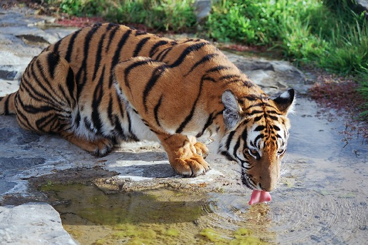

Előző lap
Panthera
Felis
A macskafélék közvetlen őse a Pseudaelurus volt, amely nagyjából 20–10 millió évvel ezelőtt élt. Korábban úgy
gondolták, hogy a család összes tagjának közös felmenője a még ősibb, nagyjából 25 millió éve élt Proailurus volt,
de újabb kutatások szerint a Proailurus a macskaalkatúak bazális csoportja volt, vagyis a macskaféléken kívül
feltehetőleg többek között a cibetmacskafélék és a mongúzfélék is tőle származtathatók.
Az oligocén vége felé megkezdődött az éghajlat lassú lehűlése, ami később a legutóbbi jégkorszakhoz vezetett. A
környezet megváltozott, az elsivatagosodás következtében kevés volt a zsákmányállat. Ahhoz, hogy egy ragadozó ilyen
körülmények között vadászni tudjon, különleges érzékekre volt szüksége. Mivel a zsákmányállatok mérete nőtt, a
macskáknak alkalmazkodni kellett, így egyre nagyobbak és erősebbek lettek, persze megmaradtak a kisméretű macskák
is.
Fejlődésük során a macskáknak több, evolúciós zsákutcának tekinthető, kihalásra ítéltetett csoportjuk is létezett.
Ilyenek például a kardfogú macskák. Ezek az állatok falkában vadásztak és hatalmas, akár 28 centiméter hosszú
szemfogaik is lehettek. Evolúciós szempontból nagyon fontosnak bizonyulnak ugyanis több millió éven keresztül ők
voltak a csúcsragadozók a Földön. Első fajaik úgy 10 millió éve fejlődtek ki, és a holocén elején haltak ki. Egyik
legismertebb nemük a Smilodon.
A legújabb DNS-vizsgálatok szerint, a legősibb, ma is létező nemük a Panthera – ide tartozik az oroszlán, a leopárd,
tigris és a jaguár. A legkésőbb kifejlődött nem a Felis, ahova a vadmacska és a házi macska is tartozik.[4]
A vizsgálat szerint a macskafélék ma élő nemei az alábbi 8 fejlődési vonal mentén fejlődtek:
